Emodama -日々の出来事や感じたことを感情ごと表現するSNS
使用技術
HTML/CSS/JavaScript/React/Python/Flask/MySQL/Azure/Cloudflare
制作期間
3カ月（React勉強期間含む）
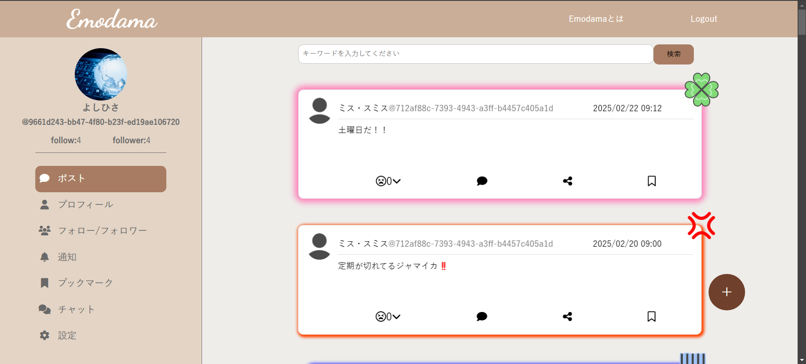
概要
学校の就職作品プレゼンテーションというイベントに向けて制作した作品です。
Emodamaでは文だけでは読み取りにくい投稿したユーザーの感情をわかりやすく表現することにより思い違いなどを少なくし、見る人が共感しやすくなっているSNSです。
制作した理由はローカルではなく、アクセスができるサイトを作ってみたかったこと、自分で学んだReactでサイトを作りたかったこと、そしてSNSはどのようにユーザー同士が繋がることができているのかを自分の手で作ることで学びたかったからです。
既存のSNSと異なる点は、投稿した人の感情がわかりやすいことです。エフェクトや画像によってより分かりやすくなっています。
また、リアクションをしたユーザーの感情もわかるように、リアクションの数を増やし豊富にすることでグッドマークやハートマークだけでは伝わらないどのような気持ちで押されたのかがわかるようになっています。
作品URL: https://emodama.rurariyu.dev
サイト構成
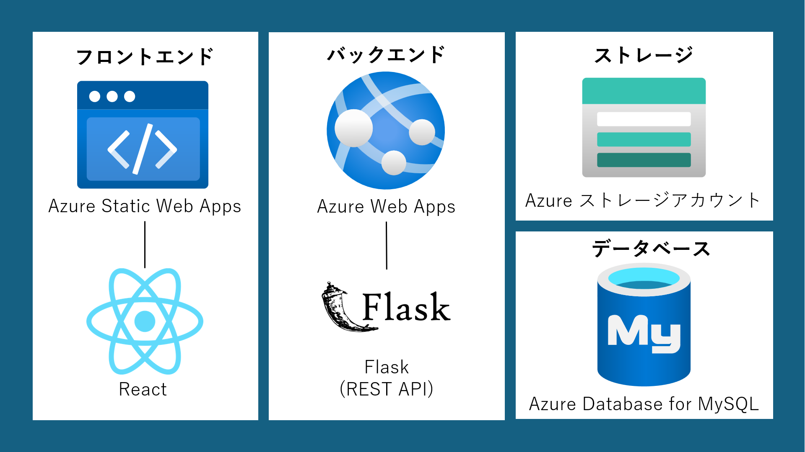
Topページ
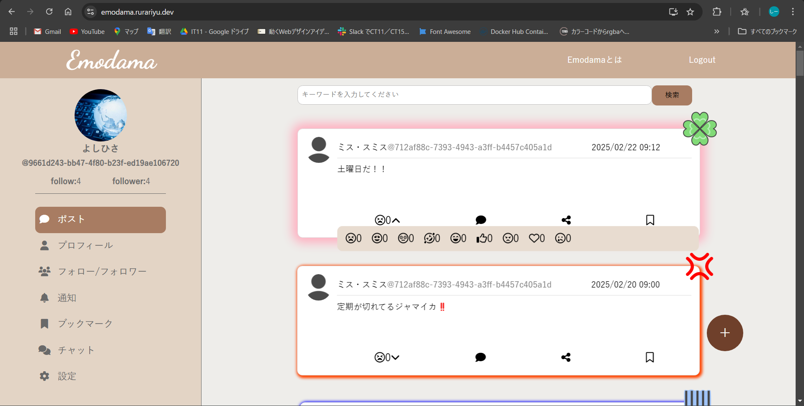
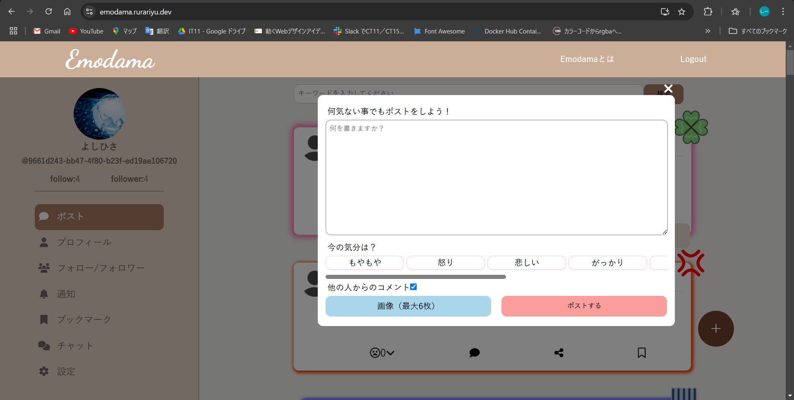
- ・投稿を見ることができます。
- ・ログインをすることで投稿やリアクション、コメント、ブックマークの登録をすることができます。
- ・投稿の文の完全一致で検索することができます。
プロフィールページ
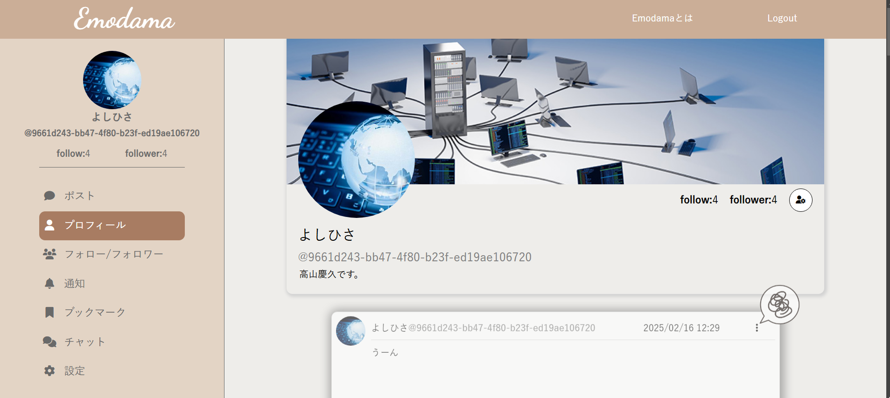
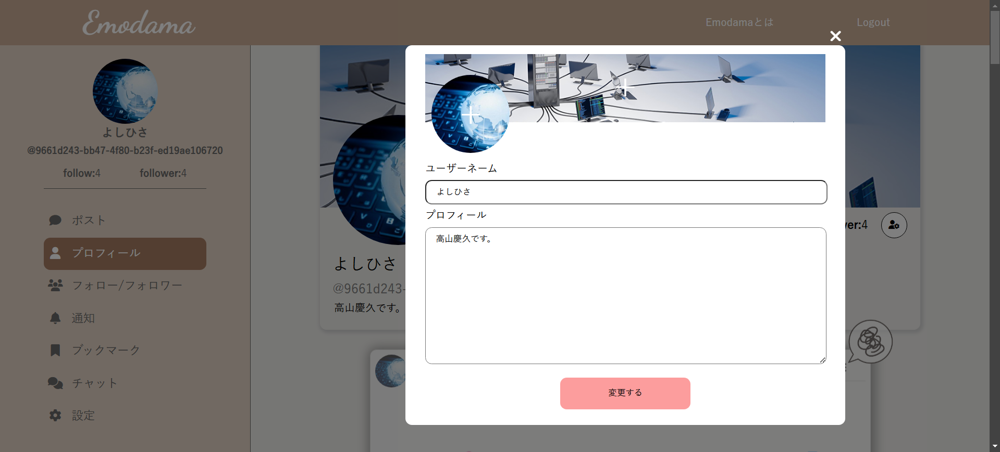
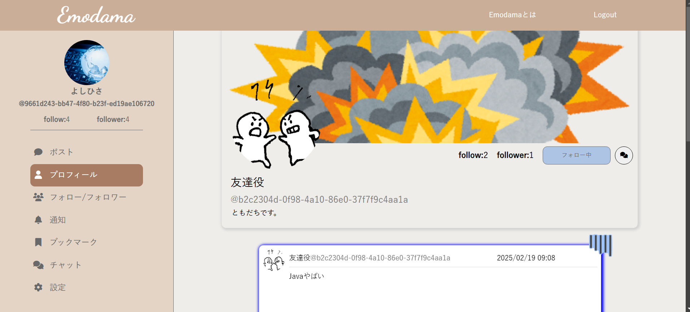
- ・自分の場合はユーザーアイコン、プロフィールの背景、ユーザー名、プロフィール文を変えることができます。
- ・他のユーザーの場合はフォローやチャットを追加することができます。
フォロー・フォロワーページ
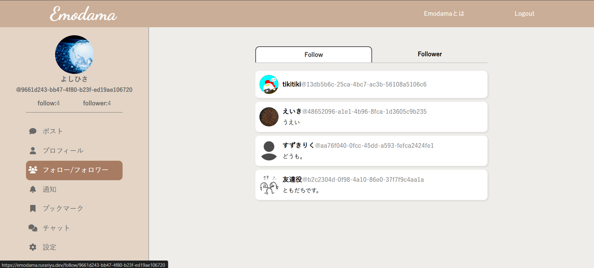
- 自分がフォローしているユーザーまたは、自分をフォローしているユーザーを見ることができます。
通知ページ
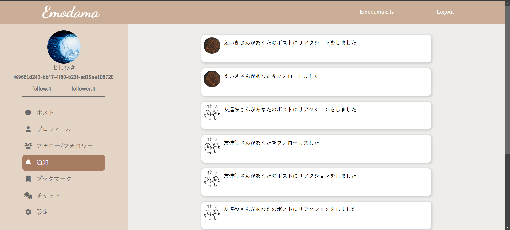
- ・他のユーザーがリアクションやフォローをした時に通知が追加されます。
ブックマークページ
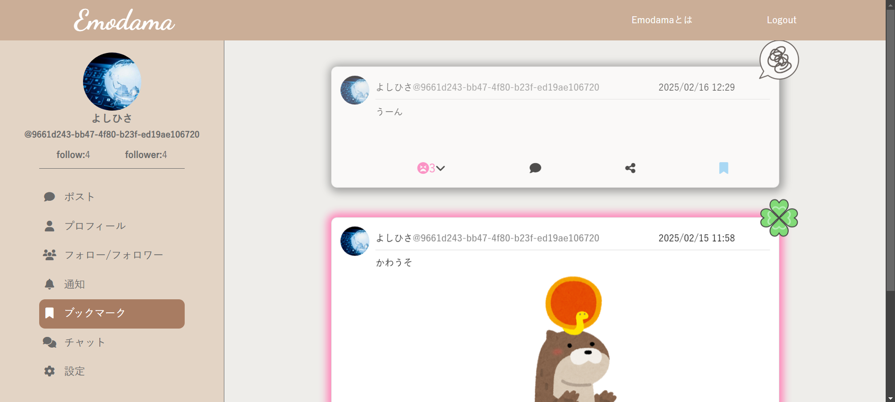
- ・ブックマークに登録した投稿を見ることができます。
チャットページ
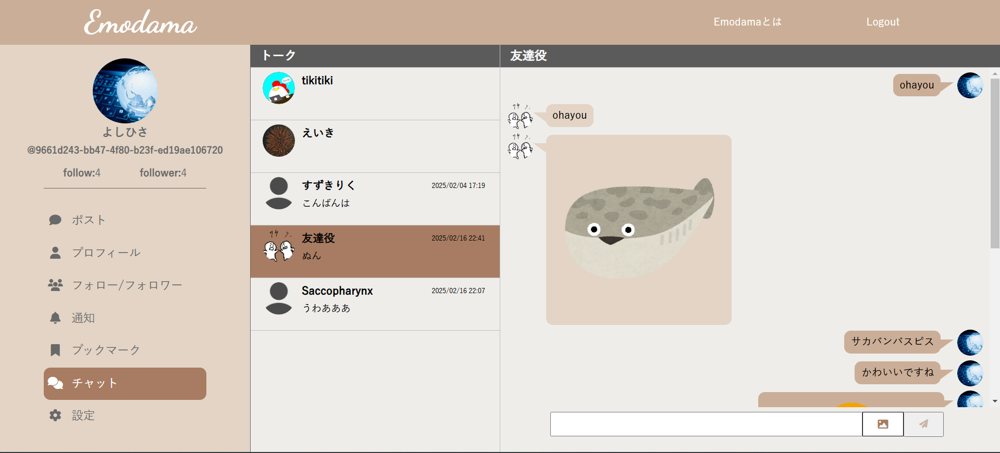
- ・他のユーザーと一対一で会話することができます。
設定ページ
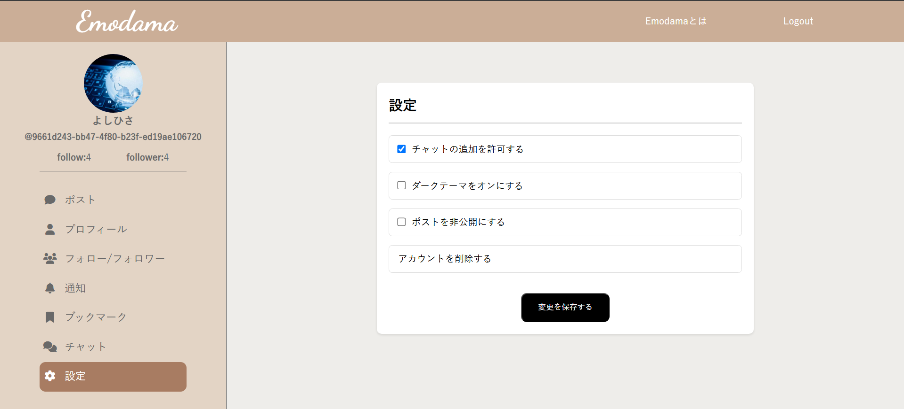
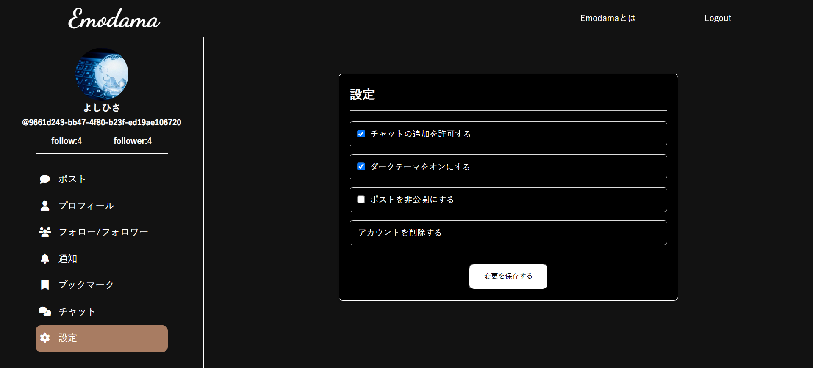
- ・チャットの追加可否やダークモードへの変更、プロフィールページで自分の投稿を他のユーザーから見ることができないようにすること、アカウント削除ができます。